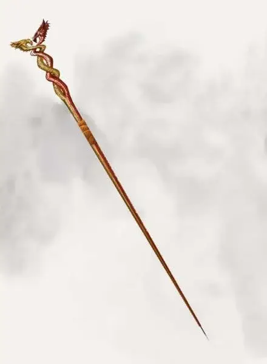

Драконий посох Агерона
Dragonstaff of Ahghairon
Посох, легендарный (требуется настройка)

Рекомендованная стоимость от 50 001 зм
Пока вы держите в руках драконий посох Агерона, вы получаете преимущество на спасброски против заклинаний и оружия дыхания как драконов, так и прочих существ драконьего вида (вроде дракочерепахи).
Любое существо драконьего вида, к которому вы прикоснётесь посохом, может перемещаться по Глубоководью, пренебрегая защитой Агерона от драконов (см. «Драконий оберег Агерона»). Эффект длится, пока вы снова не прикоснётесь посохом к существу, или пока не пройдёт время, которое вы указываете, накладывая этот эффект.
У посоха 10 зарядов. Пока вы держите его в руках, вы можете действием потратить 1 заряд, чтобы наложить заклинание приказ [command].
Если целью этого наложения окажется дракон, то он совершает спасбросок с помехой. Посох восстанавливает 1к10 зарядов каждый день на рассвете.
Драконий оберег Агерона
Вотердип накрыт нерассеиваемым магическим эффектом под названием драконий оберег Агерона. Он исходит откуда-то из-под Башни Агерона в Замковом районе и держится постоянно. Драконы и все прочие существа с типом «дракон» физически неспособны проникнуть в город (включая его канализацию), пока существует драконий оберег. Эффект не затрагивает гавань и Подгорье.
Если существа с типом «дракон» коснуться драконьим посохом Агерона, оно может игнорировать драконий оберег и свободно перемещаться по городу.
Эффект длится, пока существа не коснутся посохом снова или пока не пройдёт период времени, указанный тем, кто настроен на посох.
Драконьим посохом сейчас владеет взрослый золотой дракон Ауринакс, стерегущий тайное хранилище под городом.